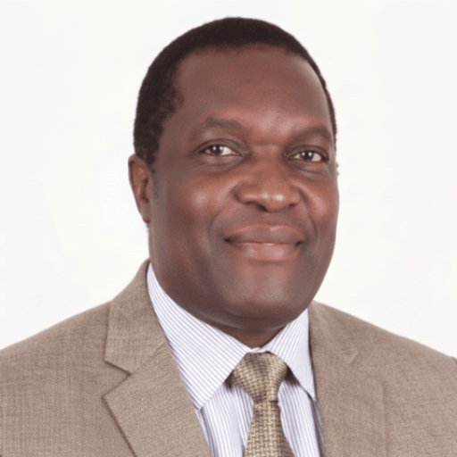

Office of the Vice Chancellor
Message From The Vice Chancellor

Prof. Fred Simiyu Barasa
I warmly welcome you to Taita Taveta University located in Taita Taveta County in the Coast region. The University currently has four schools namely; School of Mines and Engineering, School of Business Economics and Social Sciences, School of Science and Informatics and School of Agriculture, Earth and Environmental Sciences. Each school provides competitive courses in line with Kenya's Vision 2030 and the Millennium Development Goals and also with the labor market. Our flagship course is in Mining and Mineral Processing Engineering and we pride ourselves as the University of mining in Kenya aiming to be a regional leader in this sector considering our location in mineral rich area.
For ideas and suggestions on how we can improve our services to Kenyans please send your comments and general enquiries to vc@ttu.ac.ke or visit our website: www.ttu.ac.ke. We welcome you to explore our website, interact with us and visit us at TTU located near Voi. Most important recommend us to your friends and relatives who are looking for a training opportunity.
Profile of the Vice Chancellor
Professor Fred Simiyu Barasa is a Kenyan and DAAD Scholar who holds a PhD in Comparative and International Education from the University of Natal (South Africa). He is also an alumnus of Kenyatta University (Kenya) where he obtained his first two degrees -- a Bachelor of Education (Science) and a Master of Education. He is a holder in undergraduate studies in Physics, Chemistry and Education from Kenyatta University, and later undertaken master and doctoral studies with research focus on technical education and vocational training.
He has a wide teaching, research and management experience at university level. Previously, he has served as the Executive Director/CEO of the African Council for Distance Education (ACDE), which is a continental standard setting and unifying body of African Open and Distance Learning universities and the African Union lead implementing agency for distance education and e-learning.
He has also served as Dean of the School of Education, Arts and Theology at Kabarak University and held several senior management positions at Egerton University, including being founding Director of the College of Distance Education, serving as Dean of the Faculty of Education and Human Resources and Chairman of the Department of Educational Foundations.
Further, Professor Barasa served as Manager for Academic Program Development and Management at the African Virtual University (AVU), and has several years of working experience in development of distance learning materials and management of learner support systems in dual and mixed mode contexts in African universities.
Moreover, he has been commissioned by various international development organizations and governments in Africa as an advisor and lead education consultant in quality assurance, program monitoring and evaluation, teacher management and development, education policy analysis and development, as well as analysis of education system efficiency and effectiveness. In addition, he has not only been recognized by various universities and organizations across Africa and worldwide, and has also made significant scholarly contributions through publishing in and serving as editor of internationally reputable journals.
What We Do
The VC's office is responsible for guiding the University towards attainment of its Vision, & Mission and realization of its Philosophy, Motto & Core values. The office is also tasked with managing people, data and processes and creating a climate hospitable to education and good work environment.
List of Staff in the Department
Secretary: Ms. Consolata Mwaruta.